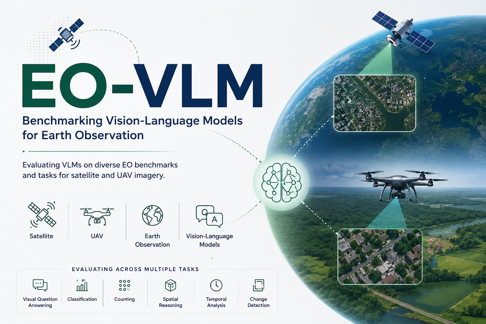

Overview
EO-VLM is a benchmarking framework for evaluating vision-language models on Earth observation tasks using satellite and UAV imagery. It provides a unified, reproducible evaluation pipeline across tasks including scene classification, visual question answering, counting, and temporal analysis. Results below are produced against the GEOBench-VLM dataset.
Benchmark Results
Loading benchmark tables...